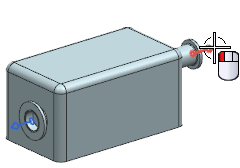
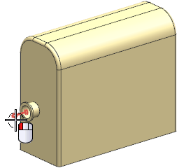
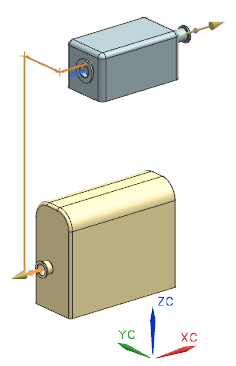
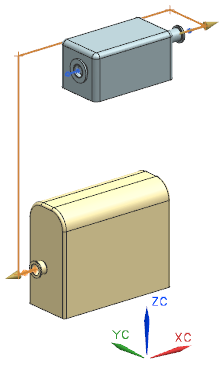
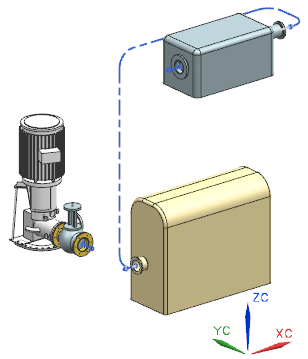

设置修复路径参数
当您选择管线路径的起始端口或终止端口时，端口的延伸特性将被读取到起始点或终止点的延伸值中，您可以接受这些值，也可以进行修改。
-
在机械管线布置工具条上的路径下拉菜单中，选择修复路径
 。
。 -
选择 RTG1_SUBSTATION2上的一个端口。

延伸值将被自动设置为600。
提示
为了让您选择端口更容易，可以在选择条上的类型过滤器中选择管线布置对象。
-
选择 RTG1_SUBSTATION1上的端口。

-
在设置组的方法列表中，选择 XC YC ZC。

这个方法将使第一段路径穿过第二个子站。
-
因此需要尝试其它轴方法。
最好的方法应该是 YC XC ZC 方法。
-
选择 YC XC ZC。

这个方法现在避开了第二个子站。
-
选中直线下方的指派默认拐角
 复选框。
复选框。 -
点击应用。

两个子站间的路径已经完成。